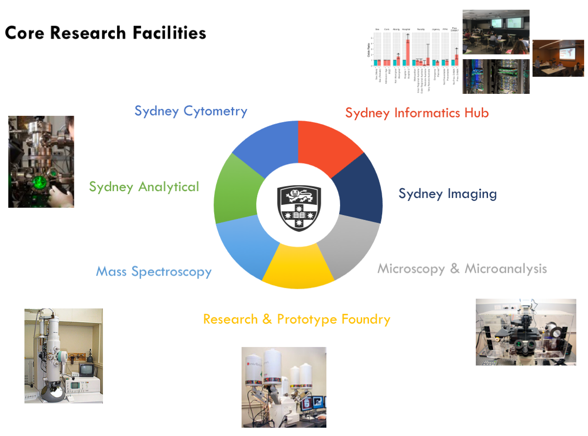
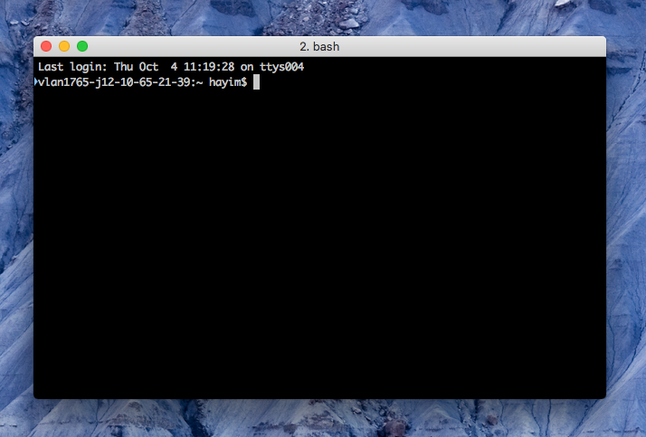
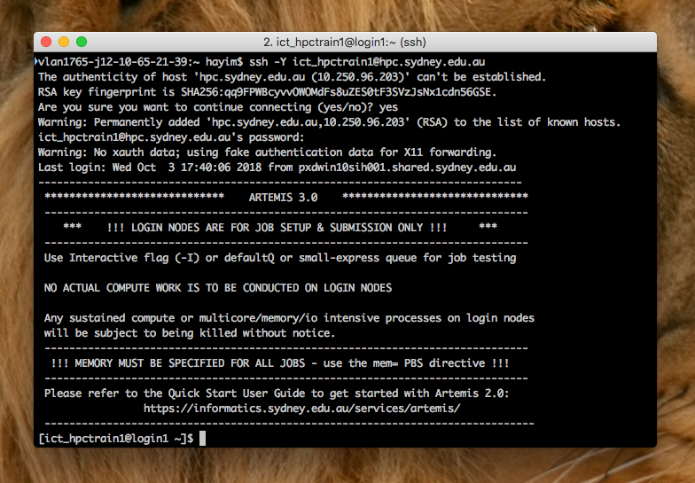
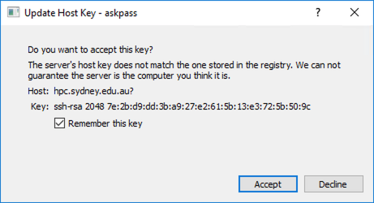
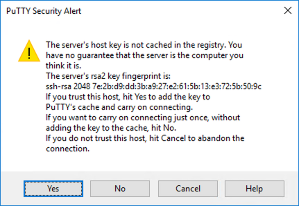
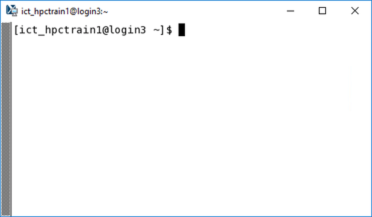
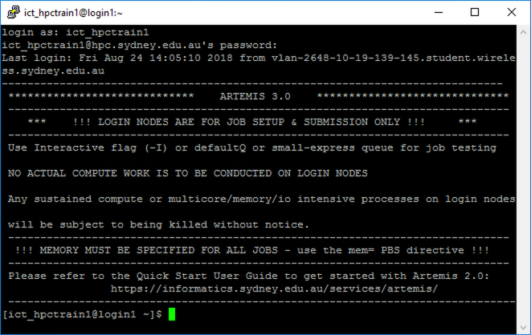

Welcome to Nimbus VM
Questions
- What is a Nimbus VM?
- What is an ‘Artemis’..?
Objectives
- Learn how to connect to Artemis.
This episode introduces the Sydney Informatics Hub, Artemis HPC and how to get connected.
The Sydney Informatics Hub
The Sydney Informatics Hub (SIH) is a Core Research Facility of the University of Sydney. Core Research Facilities centralise essential research equipment and services that would otherwise be too expensive or impractical for individual Faculties to purchase and maintain. The classic example might be the room-size electron-microscopes, built into specialised rooms in the Sydney Microscopy & Microanalysis unit.

Artemis HPC itself is a multi-million dollar set of equipment, a ‘supercomputer’, and is the main piece of equipment supported by SIH. However, we also provide a wide range of research services to aid investigators, such as:
- Training
- Statistics Consulting
- Modeling/Simulation/Visualisation consulting and platforms
- Bioinformatics consulting
- Research Data Management Consulting and platforms
- Data Science & Research Engineering project work
We also aim to cultivate a data community at USyd, organising monthly Hacky Hours, outside training events (eg NVIDIA, Pawsey Center), conferences, and data/coding-related events. We regularly run competitions and other collaborative events, check out website for more details http://sydney.edu.au/sydney-informatics-hub.
Artemis HPC
We’ve mentioned ‘Artemis HPC’ many times now, but what is it? HPC stands for ‘High Performance Computing’, but you might also simply call Artemis a ‘supercomputer’. Technically, Artemis is a computing cluster, which is a whole lot of individual computers networked together. At present, Artemis consists of:
- 7,636 cores (CPUs)
- 45 TB of RAM
- 108 NVIDIA V100 GPUs
- 378 TB of storage
- 56 Gbps FDR InfiniBand (networking)
Artemis computers (which we’ll call machines or nodes) run a Linux operating system, ‘CentOS’ v6.9. Computing performed on Artemis nodes is managed by a scheduler, and ours is an instance of ‘PBS Pro’.
Why use Artemis?
Artemis is ideal for calculations that require: * A long time to complete (long walltime) * High RAM usage * Big data input or outputs * Are able to use multiple cores or nodes to run in parallel, and hence much faster
Artemis is available free of charge to all University of Sydney researchers. You do need a unikey, and a valid Research Dashboard Research Data Management Plan with Artemis access enabled.
Artemis is also a great incentive to funding bodies to view your projects favourably – as they know you have the resources required to get the work done.
Finally, if you do use Artemis for your research, please acknowledge us! This ensures that we continue to get the funding we need to provide you with what is really a first-grade computing resource. And don’t forget to apply to the Publication Incentive! A suggested acknowledgment might say:
The authors acknowledge the Sydney Informatics Hub and the University of Sydney’s high performance computing cluster, Artemis, for providing the computing resources that have contributed to the results reported herein.
Connecting to Artemis
Connections to Artemis are remote connections – you’ll never sit at one of Artemis’ machines, which are stored in a secure data-centre in Western Sydney. Instead, you connect remotely into one of Artemis’ login nodes. Login nodes are Artemis machines that don’t perform any actual computing jobs, but simply provide users with an access gateway to Artemis’ filesystems and the PBS Pro job scheduler.
You can thus connect to Artemis from anywhere, requiring only a terminal emulator with an SSH client. (If you’re not on the USyd network (ie off-campus), you’ll also need to connect to the University’s VPN, or use Artemis’ intermediate Jump server.
If you followed the Setup instructions, then you should already have the required software installed. If not, please go do this now!
Connecting via SSH in a terminal (recommended)
Depending on your computer’s operating system, there may be several ways to connect to Artemis. The simplest way is to open your terminal emulator application, and ‘ssh’ into the Artemis login-servers. This is our recommended method, as to use Artemis effectively you should get comfortable working on the command line.
Linux and Mac both have native terminal apps, so you only need to open them. You may also have installed one on your Windows machine.1 Go ahead and do that now. The last line displayed in your terminal window should have some information about your computer’s name, and you user name, followed by a **\(** symbol. This is the **command prompt** -- you type your commands after the '\)’.

To connect to Artemis securely, we’ll use the SSH (Secure Socket Shell) protocol; on most systems, any installed SSH client will be invoked by the command ‘ssh’. Before you connect, make sure you know your username and password. When you use Artemis for your research, these will be your Unikey and Unikey password; however, for this training course we’ll be using training accounts, which are:
- Username: ict_hpctrain<N>, with N from 1-20 (replace <N> with your assigned number)
- Password: will be written on the whiteboard!
At your command prompt, execute the following (type it and press ‘return/enter’):
ssh -X ict_hpctrain<N>@hpc.sydney.edu.auor, if using XQuartz on a Mac
ssh -Y ict_hpctrain<N>@hpc.sydney.edu.auThe -X or -Y flags tell ssh to enable X-forwarding, which lets GUI programs on Artemis serve you graphical windows back on your local machine.
If connecting for the first time, you may get the following output, requesting authorisation to connect to a new host server:
``sh The authenticity of host ‘hpc.sydney.edu.au (10.250.96.203)’ can’t be established. RSA key fingerprint is SHA256:qq9FPWBcyvvOWOMdFs8uZES0tF3SVzJsNx1cdn56GSE. Are you sure you want to continue connecting (yes/no)? ```
Enter ‘yes’. You will then be asked for your password; type it and press ‘enter’. You should then be logged in!

Connecting via an SSH GUI (common for Windows users)
If you’re on Windows, and followed the Setup guide, then you will likely be connecting through an X-window or shell client program, like ‘X-Win32’ or ‘PuTTY’. Following the instructions in the Setup guide:
- Open your installed program
- Select the “Artemis” session you configured earlier
- Click ‘Launch’ (X-Win32) or ‘Open’ (PuTTY)
If this is the first time connecting to Artemis, you will be asked to authorise it as a trusted host server; click ‘Accept’ (X-Win32) or ‘Yes’ (PuTTY).


If using ‘X-Win32’, you’ll then be asked for your password and once entered, you should be logged on to Artemis! A terminal window and command prompt on Artemis will appear.
If using ‘PuTTY’, a terminal window will appear and prompt you for your username, and then your password. Once entered, you should be logged on to Artemis! A command prompt on Artemis will appear in that window.


Connecting via the Graphical Login Nodes (advanced users)
For some users, it is occasionally necessary to have more reliable graphical access to the Artemis login nodes, in order to check intermediate results when using software with graphical outputs. Setup instructions are provided on the Setup page.
Notes
1↩︎ Such as ‘Cygwin’, ‘MinGW’, or even the very handy ‘Git for Windows’.
Key points
- Connecting to Artemis requires a terminal emulator, and an account with access.
- Users connect to Artemis’ login nodes only.
- On Windows, use X-Win32, PuTTY, or another shell and terminal application of your choice.
- GUI login access is also available.
All materials copyright Sydney Informatics Hub, University of Sydney